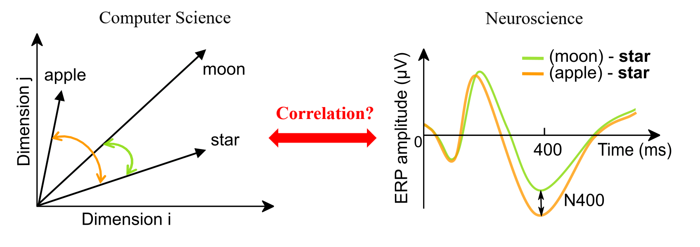

Procedures of brain-NLP comparison
Examining the similarity of semantic representation by the correlation of semantic similarity measures from NLP models and human brain.

Semantic representation as word embedding in NLP models (Download)
Recent development in deep learning NLP models creates embedding representations based on words distribution in their context in a large corpus. Semantic representation of each word can be characterized as a high dimensional vector. The semantic similarity between two words can be quantified by the cosine value of the angle between two vectors [figure above, left].
Neural measures of semantic representation (Download)
Semantic representation is distributed among neural system. The semantic similarity between two words can be measured as the modulation effects of preceding word on the target word, such as N400 effects in semantic priming -- less neural activity around 400 ms after the onset of a more semantically similar word [figure above, right].
Comparing the representations in two complex systems
We pseudo-randomly pre-defined 120 word pairs and obtained the EEG responses to each pair [see 'Experiment and materials' and 'Brain-NLP database' for details]. We correlated the semantic similarity measures from three representative NLP models with the EEG responses at single trial/word level. Complete temporal and spatial profile of correlation was revealed, indicating the dynamics and features in the comparable semantic representation in two complex systems [see results in manuscript for details].